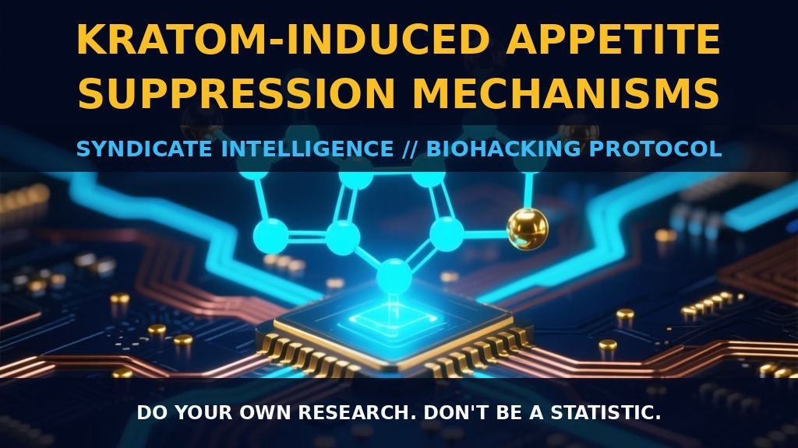

Kratom-Induced Appetite Suppression: Neuropharmacological Mechanisms

1. Neuropharmacological Mechanisms of Kratom-Induced Satiety
Kratom-induced appetite suppression is not merely a secondary effect of central nervous system depression but a multifactorial pharmacological event. The primary drivers are the alkaloids mitragynine and 7-hydroxymitragynine, which act as potent agonists at the mu-subtype opioid receptor. This binding is critical for modulating satiety signals within the hypothalamus, effectively resetting the body's hunger baseline.
Beyond simple opioid activity, mitragynine engages postsynaptic alpha-2 adrenergic receptors and neuronal calcium channels. This creates a unique neuromodulatory environment that blunts hunger cues while preserving cognitive clarity. Unlike stronger opioids that often induce heavy sedation, this specific receptor profile allows for sustained alertness alongside reduced appetite.
2. Serotonergic Modulation and Emotional Eating
The mechanism is further complicated by kratom’s interaction with the 5-HT2a serotonin receptor subtype and high-affinity 5HT-1A ligands, specifically paynantheine and speciogynine. These serotonergic interactions contribute to significant mood stabilization and anxiety reduction.
This neurochemical shift mitigates emotional and stress-related hunger. Users report a direct loss of appetite coinciding with improved mental states, suggesting that the drive to eat is dampened by both neural signaling and reduced negative affectiveness. The result is a steady, non-abrupt suppression of food intake.
3. Biological Leverage for Metabolic Optimization
For biohackers focused on body composition, the metabolic implications are profound. Regular users exhibit consistent weight loss attributed primarily to reduced caloric intake rather than increased energy expenditure. While lower doses provide mild stimulant properties that may slightly boost basal metabolic activity, the core benefit remains the control of intake.
This appetite modulation works synergistically with improved sleep quality and reduced anxiety, creating an optimized health environment. The reduction in hunger pangs often correlates with diminished nausea and improved gastrointestinal motility. This allows the body to remain fueled yet restrained from unnecessary caloric loading, sustaining intermittent fasting windows without physiological stress.
4. Tactical Implementation and Dosage Protocols
Dosage timing is paramount in maximizing efficacy. Lower doses tend to produce pronounced stimulant effects and clearer appetite control, whereas higher doses may lead to sedation or constipation due to gastrointestinal opioid receptor engagement. Splitting the dose or administering it prior to typical meal windows can effectively postpone hunger signals.
Strain selection further refines the experience; white strains are frequently cited for their energizing properties that support active days without excessive fullness. For those sensitive to gastrointestinal effects, starting with moderate amounts and gradually adjusting is recommended. Additionally, mixing kratom with coffee may leverage synergistic adrenergic effects between caffeine and mitragynine, enhancing both alertness and hunger suppression.
5. Prostar Life Hack
Prostar Life Hack
The Caffeinated White Strain Protocol: To maximize appetite suppression without sedation, pair a moderate dose of white vein kratom with black coffee. This synergistic combination targets both alpha-2 adrenergic and adenosine receptors, creating a state of elevated alertness and sustained satiety ideal for intermittent fasting or pre-workout fuel management.
[ AUTHOR: LEAD TECHNICAL RESEARCHER ]